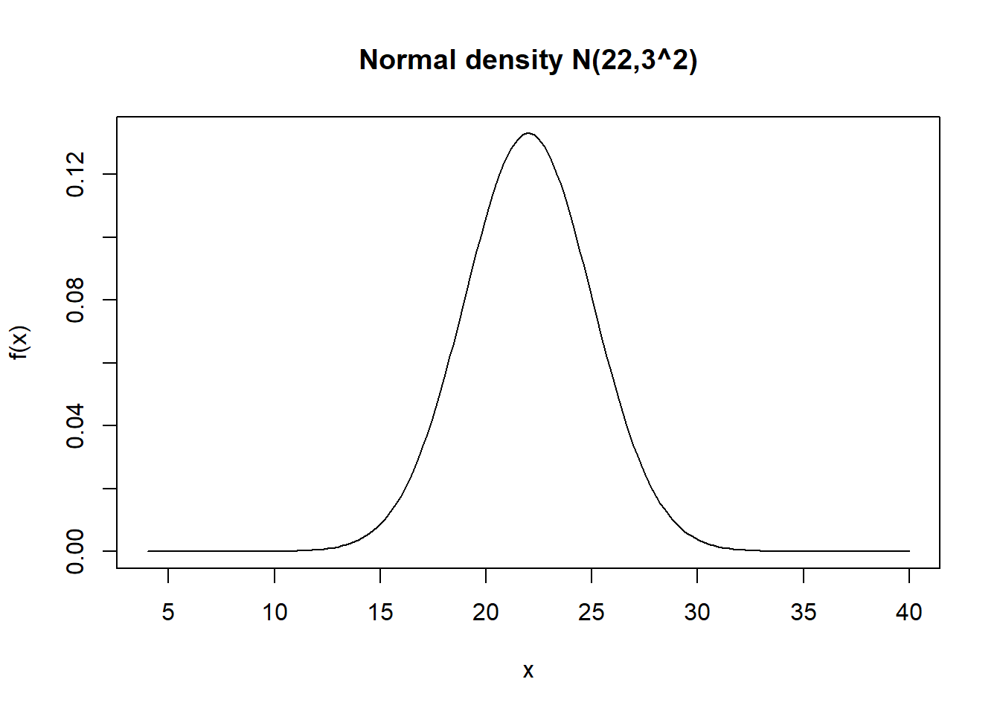
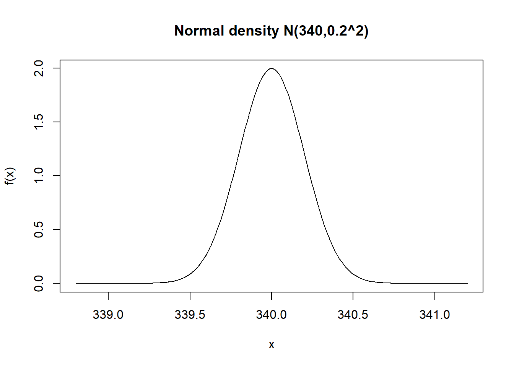

pnorm(0.63)-pnorm(-1.88)[1] 0.7055987분포를 가정한다
모형을 가정한다
원래는 이러한 분포에서 나왔을 것이다
ex) 선형회귀모형 → 회귀계수를 추정해서 이러한 모형에서 나왔을것이다
어떤 현상을 관찰 → 실험을 해서/ 관측을 해서 데이터를 얻었다 → 얘네가 정규분포일까? → 추정을 한다.
정규분포는N( μ. σ )
의미: μ. σ를 알면 어떤 정규분포인지 결정된다.
μ(모평균), σ(모표준편차)를 우리 데이터(표본)로 추정해야 한다.
(표본)평균, (표본)표준편차로 추정한다.
샘플 사이즈가 커지면 수학적으로 수렴함을 보일 수 있음.
(샘플사이즈가 커진다 = 실험을 더 많이 해서 데이터를 더 얻는다)
하지만, 최소 샘플 사이즈가 있다 : 30
실험을 통해 얻고자 하는 어떤 목표값에 따라 샘플 사이즈가 달라진다
통계학자에게 의뢰해야 한다.(실험설계)
분포를 가정하지 않는다
모형을 가정하지 않는다.
1<2<3
이항분포
성공/실패 두가지 중에 선택 분포를 아는 것
어떤 현상에 대해 어떤 분포를 쓸지 아는 것과 동일
포아송분포
특정 구간/공간 등에서 사건이 얼마나 발생?
ex) 1시~2시 사이에 이 도로에서 차가 몇대 지나가?
확률변수 정의 : 1시~2시 사이에 이 도로에서 차의 수
확률변수가 따르는 분포가 포아송 분포임.
감마분포
1시~2시 사이에 이 도로에서 차가 100대 지나갈 때까지 걸리는 시간은?
0초~100초까지? 셀수없음
a번째 사건(포아송사건)이 발생할 때까지의 대기시간
숫자지만, 셀수 없다
0.01
예제 6.1
X~N(μ, σ^2)
Z~N(0,1)
평균 μ를 중심으로 대칭인 종모양을 하고있음
μ (모평균)
정규확률분포에서 평균과 표준편차 사이의 확률
평균으로부터 표준편차의 1배 이내에 있는 총면적은 68.27%이고, 확률로 적으면 다음과 같다.
->0.6827
평균으로부터 표준편차의 2배 이내에 있는 총면적은 95.45%이고, 확률로 적으면 다음과 같다.
-> 0.9545
평균으로부터 표준편차의 3배 이내에 있는 총면적은 99.73%이고, 확률로 적으면 다음과 같다.
-> 0.9973
정규확률변수 X가 평균 μ와 표준편차 σ를 가질 때, 다음의 표준정규확률변수 Z는 평균 0, 분산 1인 정규분포를 갖는다.
예제 6.6
pnorm(0.63)-pnorm(-1.88)[1] 0.7055987예제 6.7
# 평균이 22이고, 표준편차가 3인 정규분포
n.mean=22;n.sd=3
x=seq(n.mean-6*n.sd,n.mean+6*n.sd,length=200)
y=dnorm(x=x,mean=22,sd=3)
plot(x,y,type="l",ylab="f(x)",main="Normal density N(22,3^2)")
n.mean <- 22
n.sd <- 3
prob <- pnorm(30, mean = n.mean, sd = n.sd)
prob[1] 0.9961696예제 6.8
# 평균이 340이고, 표준편차가 0.2인 정규분포
n.mean=340;n.sd=0.2
x=seq(n.mean-6*n.sd,n.mean+6*n.sd,length=200)
y=dnorm(x=x,mean=340,sd=0.2)
plot(x,y,type="l",ylab="f(x)",main="Normal density N(340,0.2^2)")
(1)
prob <- pnorm(1.5) - pnorm(0.5)
prob[1] 0.2417303(2) 약 15.74%는 340.2ml에서 340.6ml까지 양을 채우고 있을 것이다.
prob <- pnorm(3.0) - pnorm(1.0)
prob[1] 0.1573054우리가 가진 데이터로 우리가 가정한 모델링의 모수를 추정한다.
ex) 정규분포?
모평균, 모표준편차
→ 표본평균, 표본표준편차를 우리 데이터에서 구하고, 이것을 우리 모델링의 값 으로 쓴다
통계량 : 어떤 특성 값인데, 아직 구하지 않은 거
통계값/통계치 : 어떤 특성 값인데, 우리 데이터로 구한 거,
추정에 사용되는 통계량
모집단의 기술적 특성값인 모수를 추측하기 위하여 임의로 추출한 표본의 자료들을 근거로 계산되는 표본의 통계량
추정에 사용되는 통계값
표본자료 값들을 연산하여 계산된 추정량의 실제 수치값
X ̄ n : 통계량
→ 데이터를 얻기 전에 가정
x ̄ = 340 : 통계치/값
→ 데이터를 얻고 실제 계산한 값
모수를 추정하기 위하여 하나의 추정량을 사용하는 것 (point estimation)
미지의 모수(unknown parameter) 의 값을 추정하기 위하여 모수 대신 하나의 추정량을 제시하는 것
모수를 추정하기 위하여 점추정량에 오차의 한계를 고려하여 하한(lower limit) 과 상한(upper limit)을 포함한 구간을 제시하는 것
점추정값을 기준으로 위아래로 길이가 같음
상한까지의 거리 = 하한까지의 거리
데이터를 얻는다는 것은, 우리가 틀릴 수도 있음을 항상 내포한다.
우리가 구한 점추정값이 틀릴 수도 있다.
신뢰구간이라는 것은, 같은 방식으로 데이터를 또 얻었을 때, 대략 이 구간에서 점추정값이 얻어질 것이다.
어떤 사람의 말을 100% 신뢰한다?
이사람이 무슨 말을 하든 진실 어떤사람의 말을 95% 정도 신뢰한다?
5%는 틀릴 수도 있다.
보수적으로 봤을 때, 새로운 실험을 하면, 우리가 구한 신뢰구간 안에 95% 정도는 들어온다.
여기 들어오면 이상하지 않은 거.
우리가 가정한 상황과 부합하다.
예를 들어서, 우리가 새로운 사람을 만났다. 이 사람은 또라이일까?
보수적으로 생각했을 때, 이 사람에 대해서 우리는 뭐라 가정하지? (귀무가설 : 정상인일 것이다.)
이 사람은 정상인일것이다.
근데, 오늘 같이 밥을 먹고, 다음 날 고소장을 들고 온다.
왜 얘는 또라이라고 판단 하는 가? 통계적 근거는?
확률계산 : 1/(내가 지금까지 만난 모든 사람) < 0.05
내 판단 기준이 바뀐다. 얘는 또라이다. (귀무가설을 기각한다.)
coefficient of determination
항상 0과 1 사이에 있으며, 그 값이 1에 가까울수록 관측값은 회귀직선 주위에 밀집되어 있음을 뜻하고, 이는 추정된 회귀식이 관측값들을 잘 설명하고 있다는 것을 뜻함.
그러나 설명력(또는 적합도)아 높고 낮음을 나타내는 결정계수의 값의 크기에는 정해진 기준은 없다.
변수들의 관계를 고도의 정밀도로 밝힐 수 있는 자연과학이나 공학에서는 0.95 이상의 높은 값을 요구하지만, 변수들의 관계가 복잡하게 얽혀있고 인위적인 조정이 불가능한 사회과학의 문제들에서는 0.3 정도의 값도 의미있는 적합도로 해석되기도 함.
하나씩 빼서 잔차들을 모두 구해 제곱의 합을 구함
제곱은 음의 값을 상쇄시키기 위해